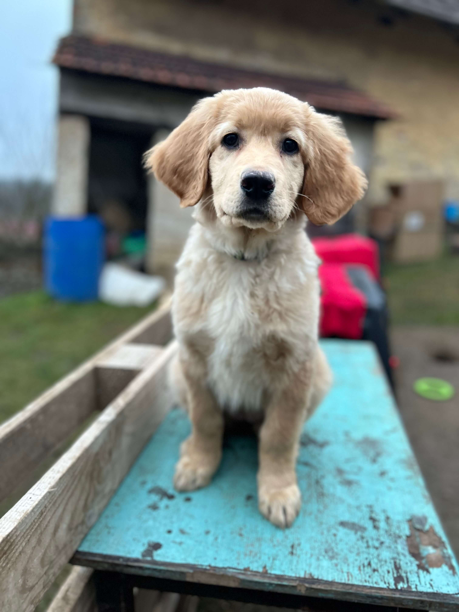
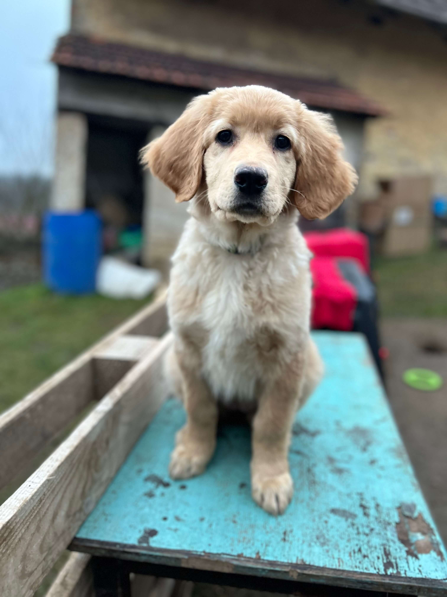

Novinka z prvnà adventnà neděle! 🎄📸🐾
Máme za sebou nádhernou prvnà adventnà neděli – a mÃsto peÄenà cukrovà jsme fotili něco mnohem sladÅ¡Ãho. Š těňátka! 🐶✨ Těmto chlupatým kuliÄkám bude v pondělà 2. 12. rovných 10 týdnů, a pořád máme pět malých pokladů, kteřà hledajà své nové domovy. ❤️
Seznamte se:
Acamar, Altair a Aldan – tři plavà kluci s nevinným pohledem a dobrodružstvÃm v krvi. 🐕💛 Alcor – jediná plavá sleÄna, která vÃ, jak si vás omotat kolem tlapky. 🐾💕 Arcturus – Äernoznakatý elegán, který si už teÄ myslÃ, že je hvězda! 🌟🖤 Pokud hledáte psÃho parťáka na životnà dobrodružstvÃ, napište nám! Tito drobci Äekajà jen na vás. ✉️✨
Pozor, rezervujte si mÃsto na gauÄi – štěňátka jsou roztomilá, ale zabÃrajà spoustu prostoru ve vašem srdci. ❤️
 


Zprávy z porodnà bedny
Úterý 17.9. - Edinka je velmi neklidná a celou nc jsme spolu strávily v porodnà bedně, která byla už od soboty připravená na své budoucà obyvatele.
Středa 18.9. - Ještě jsme stihly rannà procházku a zavolat naÅ¡Ã "doně", že má nastartovat auto a přijet. Než dojela byl v 10.10 hod na světě prvnà znakatý kluk za dalÅ¡Ãch dvacet minut přišla na svět plavá holÄiÄka. DalÅ¡Ã znakatý kluk na sebe nechal trochu Äekat. Poslednà štěňátko přišlo na svět až před půlnocÃ. Bylo to dlouhé a nároÄné a Edinka byla hodně unavená, aÄ to bylo jejà poprvé, vše s přehledem zvládla.
Čtvrtek 19. 9. - Všichni se srovnáváme s Äerstvě narozenými štěňátky a novým chodem domácnosti. NavštÃvila nás panà veterinářka, která všechny prohlédla a zkontrolovala zda jsou všichni v pořádku.
Pátek 20. 9. - z Edinky je peÄlivá maminka, která se vzorně stará, jen je nesmÃrně vybÃravá v jÃdle. Co jà jednou chutná, podruhé už nemusÃ. Pokud se málo najà hned je to znát, protože je málo mléka pro štěňátka.
Sobota 21. 9. - Š těňátka nám dělajà radost, krásně přibývajà na váze. Všem chutná, jen někteřà jsou lenivějÅ¡Ã a je nutné je na jÃdlo budit.
Neděle 22. 9. - Všechno se u nás toÄà okolo jÃdla, zjišťujeme co se dá, aby Edinka měla dostatek mlÃka pro potomky, ale moc s námi nespolupracuje. Š těnda se perou o nejvhodnějÅ¡Ã mÃsta u mámy. Parta plaváčků už to umà pěkně rozjet!
Pondělà 23. 9. - Tak ode dneška peÄujeme o štěňátka ve třech. Máme pomoc v podobě Emy – ŘedkviÄky. Jezdà k nám z Prahy. všichni jà majà moc rádi.
Úterý 24. 9. - Š těňata se hlasitě projevujÃ,
Středa 25. 9. - slavÃme prvnà „narozeniny“ - už jsme na světě týden.